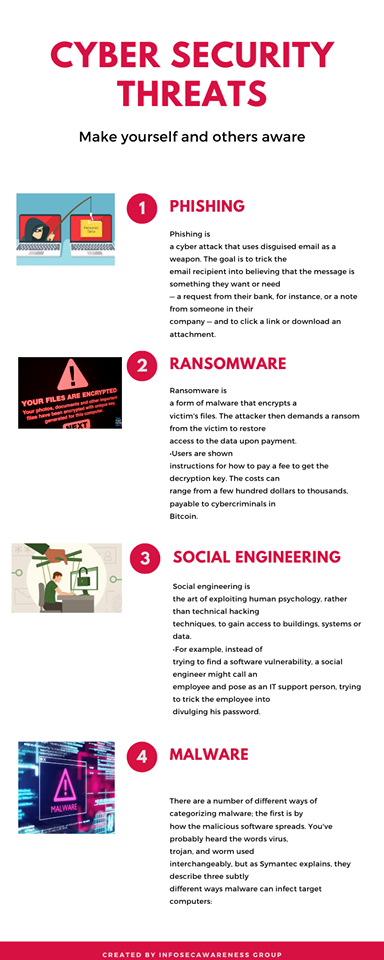
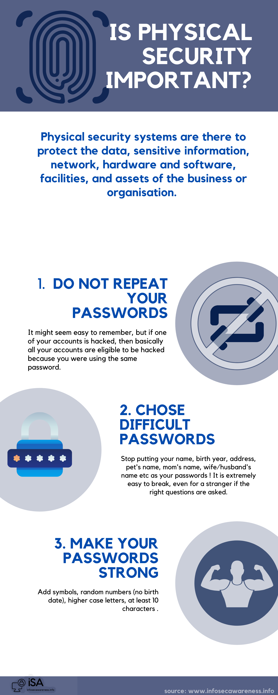

- Welcome to our Social Engineering page. Here we'll try to give you more insight into what Social Engineering is, and how it can be used against you if you are unaware of it. We also reasearched about different Cyber Security habbits and advices such as - travel tips, online shopping, public wifi's, email hacking and passwords. This is all meant so you can increase your understanding of the risks that reside in the cyberspace, so that you can successfully mitigate them. So scroll down and enjoy what you read.
Social Engineering
Secure your computer by installing protection like firewall, email filters, antivirus and frequent update.
It is recommended to delete request for those asking for financial or personal password.
Short Video Clips
Cyber Security Travel Tips
Only take personal devices when absolutely necessary and when you do, remove or encrypt any confidential data.
For long and unsafe travels, consider using temporal devices e.g inexperience laptops, prepaid/PayAsYouGo subscription, etc
Install a device finder or manager on your mobile in case its lost or stolen
Make sure any device with an operating system and software is fully patched and updated with security software.
Keep back home copies of vital and sensitive documents in case of lost or being stolen.
Protect and lock your devices with strong passwords, passcodes, or smart-phone touch ID.
Avoid posting on social media about your travel plans which could lead to you being a target for thieves. Wait until you are home if necessary e.g in posting you photos.
Physically protect yourself, documents and devices
If you must use ATM, use the teller inside the bank, mostly do so during the day, lookout for any skimming devices and protect the number pad as you enter your PIN.
Avoid using public computers since they might be loaded with key loggers and malware and if you must, avoid logging into sensitive accounts
Also avoid using public wireless networks or Wi-Fi hotspots since they are not secured and avoid sensitive information if you have to use it
Disable Wi-Fi and Bluetooth when not in use. If enabled, stores or other locations search could track your movements when you are within range.
Keep your devices with you at all times during your travels.
Change any passwords or passcodes you may have used abroad
Update and run antivirus on your devices
Check your accounts and credit cards for any discrepancies
Delete any apps and associated data specifically downloaded for the trip if no longer needed.
Make sure to shop only on trusted and reliable sites
Use trusted URLs instead of clicking on links or opening attachment .
Use an updated and antivirus device for shopping.
Protect your password and use multi factor authentication when possible.
Look for http(s) with “s” in the address bar if you have to use your credit card for online shopping
Regularly check your bank statement and credit card for any discrepancy
Enable alert messages and transaction limit to alert of any unusual activity.
Secure your home Wi-Fi from eavesdropper and data theft by encryption
Assume all Wi-Fi hotspots and public computers are compromised even if they appear safe and avoid logging in on sensitive or key accounts.
Have separate passwords for every accounts
Don't give sensitive information through email or text
Pay using credit card and not debit card since it offer protection that reduce liability if compromised.
Use apps only from reputable sources
Don't click and ignore pop-ups offers or deals for they are all scams
Don't auto save your passwords or credit card numbers for the convenience of it. The inconveniences is insignificant compared to the cost to incurred if compromised.
Always review privacy policies of visited sites to know what information is being collected about you, storage, usage and if it will be shared with others.
Free public Wi-Fi can be pretty convenient but a penny wise can be a pound foolish. So one has to be very cautious if you must use it to minimize the risk you could be prone to Here are some tips to look out when you do use public Wi-Fi:
Choose your network by verifying the network name you want to connect to with staff from illegitimate ones created to intercept your data in a man-in-the-middle attack
Always turn off file sharing and tick Wi-Fi connection as a public network and make sure firewall is turn on if not already activated
Make use of virtual private network (VPN) which makes it more harder for intruders to steal your data by encrypting the traffic between your device and the VPN server
Check for HTTPS instead of HTTP
Make sure your devices, softwares, apps are up to date before connecting to public Wi-Fi
Use two- factor authentication if available for added level of security
At least 8 characters or more—the longer the better
At least 8 characters or more—the longer the better
A combination of uppercase letters, lowercase letters, numbers, and symbols
Not a word that can be found in a dictionary
Not the name of a person or a popular entity such as a character, product, or organization
Significantly different from your previous passwords
Easy for you to remember but difficult for others to guess
Don’t share a password with anyone. Not even to a friend or family member.
Never send a password by email, instant message, or any other means of communication that is not reliably secure.
Use a unique password for each website. If someone steals a password that you use on multiple websites, all the information that password protects on all of those sites is at risk
If you don’t want to memorize multiple passwords, consider using a password manager. The best password managers will automatically update stored passwords, keep them encrypted, and require multi-factor authentication for access.
Don’t store a password on the device it’s designed to protect.
Change your passwords regularly, particularly those that safeguard your computer, important accounts (like email or Facebook), and sensitive information, like financial and health data.
Whenever possible, change passwords immediately on accounts you suspect may have been compromised.
Avoid entering your password on any device if you’re unsure whether that device is secure. Devices that are shared or available for public use might have key-logging software installed that could capture your password as you type it. You should also avoid allowing your password to be saved on shared or public computers.
Enable multi-factor authentication (MFA) whenever available. MFA is a method of access control that requires more than one credential for verification—such as requiring both a password and a pin. This adds another layer of security in case someone guesses or steals your password.
Criminals can try to break your password, but sometimes it’s easier to exploit human nature and trick you into revealing it. You’re most vulnerable to scams that look genuine.
You might receive an email message pretending to be from an online store (like eBay or Amazon) or a phone call from your “bank” that tries to convince you of the “legitimate” need for your password or other sensitive information. It could be a phishing scam. (You may have heard these con games referred to as social engineering.)
In general, be wary of anyone who is requesting sensitive information from you, even if it’s someone you know or a company you trust. For example, a crook may have hijacked a friend’s account and sent email to everyone in the friend’s address book. Treat all unsolicited requests for sensitive information with caution.
Always access websites using trusted links. Scammers can copy the look of a company’s communications to fool you into clicking a phony link or attachment, so use caution with links that appear in unsolicited emails, instant messages, or SMS messages. If in doubt, go directly to the official website of the bank or other service you’re trying to access.
Never share your password in response to an email or phone request—for example, to verify your identity—even if it appears to be from a trusted company or person.
E-mail Hacking
Social engineering can be defined as "Any act that influences a person to take an action that may or may not be in their best interest”(Security Through Education, 2019)
These influences are: Fear, Sympathy, Ego, Ignorance, Trust and Desire to helpThe top four methodologies social engineering according to (Security Through Education, 2019) are: Phishing, Vishing, Impersonation and SMiShing
SIMshing is when a victim is influenced to take action after receiving a text message from a mobile phone while Phishing is when a person receives an email that seems to come from a trusted source in the manner to gain personal information from them.
Vishing works in a way similar to phishing and the purpose of vishing is obtain direct information that could contribute to the direct compromise of an organization while Impersonation is the practice of pretexting as another person in order to obtain information from a person.
Tips to Remember according to (Webroot Inc, 2014-2017):
Slow down: Spammers want you to act first and think later. If the message conveys a sense of urgency or uses high-pressure sales tactics be skeptical; never let their urgency influence your careful review.
Research the facts: Be suspicious of any unsolicited messages. If the email looks like it is from a company you use, do your own research. Use a search engine to go to the real company’s site, or a phone directory to find their phone number.
Don’t let a link be in control of where you land: Stay in control by finding the website yourself using a search engine to be sure you land where you intend to land. Hovering over links in email will show the actual URL at the bottom, but a good fake can still steer you wrong.
Email hijacking is rampant: Hackers, spammers, and social engineers taking over control of people’s email accounts (and other communication accounts) has become rampant. Once they control an email account, they prey on the trust of the person’s contacts.
Beware of any download: If you don’t know the sender personally AND expect a file from them, downloading anything is a mistake.
Foreign offers are fake: If you receive an email from a foreign lottery or sweepstakes, money from an unknown relative, or requests to transfer funds from a foreign country for a share of the money it is guaranteed to be a scam.
Ways you can protect yourself according to (Webroot Inc, 2014-2017):
We all love to travel, discovering new places, meeting new people. But while traveling, people are in a very vulnerable position, because they are in a place where they do not know their surroundings, and they suddently need to put their trust into people they don't know, and this can be very dangerous if you meet someone whith the wrong means.
Before you travel:
While on travel
After travel
Cyber Security Online Shopping Tips
With the growing popularity of online shopping, so too have cyber criminals taken the advantage of the unaware online shoppers via the creation of fraudulent websites and phishing emails, acting as man-in-the-middle in intercepting insecure transactions and targeting vulnerable computers. These cyber threats can be avoided and protect us via these habits:
Public WI-FI'S
With the following examples, we would try to make you understand how dangerous public wi-fi's can actually be.
Passwords
One of the most important ways to ensure that your online interactions are safe and secure is to protect your passwords. The good news is that protecting your passwords is in your control—you just need to create strong passwords and then keep them secret. Follow this advice to help keep your passwords out of the wrong hands.
Create a strong password. Password security starts with creating a strong password. A strong password is:
Secure your password - Once you've created a strong password, you should follow these guidlines to keep it secure.
Don’t be tricked into revealing your passwords.
Here are some guidelines to follow to protect your passwords and other sensitive information: